Click the Bindings tab in the editor to created and edit data bindings.
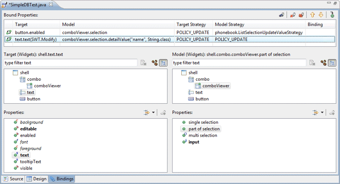
SWT uses simple bindings between targets and models.
Two types of targets and models are supported:
 Beans: any field of the current compilation unit may be selected.
The filter field above the list can be used to filter the list of beans.
The
Beans: any field of the current compilation unit may be selected.
The filter field above the list can be used to filter the list of beans.
The
 clear button can be used to clear the filter and restore the full list.
Beans are the primary data source for bindings (usually the
model). Any property of the Bean may be observed. Individual
beans may also be expanded to reveal their direct sub properties.
clear button can be used to clear the filter and restore the full list.
Beans are the primary data source for bindings (usually the
model). Any property of the Bean may be observed. Individual
beans may also be expanded to reveal their direct sub properties.
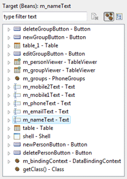
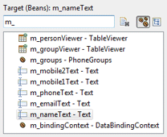
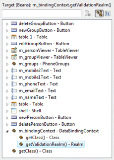
 Widgets: any widget or JFace viewer in the current compilation unit may be selected.
If a widget is not a field, it will be converted to a field
automatically. The filter field above the list can be used to filter the
list of widgets. The
Widgets: any widget or JFace viewer in the current compilation unit may be selected.
If a widget is not a field, it will be converted to a field
automatically. The filter field above the list can be used to filter the
list of widgets. The
 clear button can be used to clear the filter and restore the full list.
Only the following predefined SWT control properties may be observed:
enabled, visible, toolTipText, selection,
min, max, text, items, selectionIndex,
foreground, background, font and editable.
Any JFace viewer with a selection
property of type org.eclipse.jface.viewers.IStructuredSelection
may be selected. If the selection contains a Java Bean, it can be bound
to another object as either target or source. Typically, the selection
of one viewer is bound to the input of another viewer in a master-detail
relationship. If a selection is not a field, it will be converted to a
field automatically
clear button can be used to clear the filter and restore the full list.
Only the following predefined SWT control properties may be observed:
enabled, visible, toolTipText, selection,
min, max, text, items, selectionIndex,
foreground, background, font and editable.
Any JFace viewer with a selection
property of type org.eclipse.jface.viewers.IStructuredSelection
may be selected. If the selection contains a Java Bean, it can be bound
to another object as either target or source. Typically, the selection
of one viewer is bound to the input of another viewer in a master-detail
relationship. If a selection is not a field, it will be converted to a
field automatically
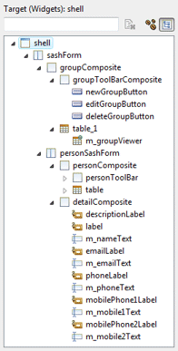
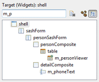
When any Target or Model object is selected, its properties (bean fields or predefined SWT widget properties) are shown in the associated Properties list. A drop down filter menu is available to filter the Property list by type. Supported filters are String, Boolean, Numbers, Color and Font.
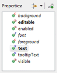 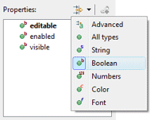 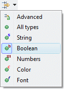
If the model object is another binding object, it is possible to bind to the validation status. If the object is already an IObservableValue (like a WritableValue), it can be bound to directly.
 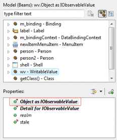
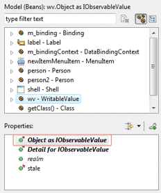
New bindings are created by selecting a Target, a
Target Property, a Source, a Source Property and
clicking the
 Bind button. When creating a binding, the update strategy from
target to model and model to target may be specified as well as
any strategy-specific properties (validators and converters).
Bind button. When creating a binding, the update strategy from
target to model and model to target may be specified as well as
any strategy-specific properties (validators and converters).
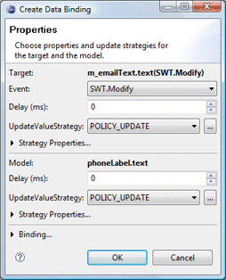
When the Target or Model is a Text widget and the text property is selected, the triggering event may be specified as SWT.Modify, SWT.FocusOut or SWT.NONE.

Predefined update value strategies - POLICY_UPDATE, POLICY_NEVER, POLICY_ON_REQUEST and POLICY_CONVERT - may be selected or a custom strategy class may chosen.


When binding to a selection object, the entire object may be bound to using the Selection as object radio button or one of its fields may be bound to using the Part of selection radio button. When Part of selection is chosen, the type of the selection should be specified in the Class field. A property specific to the specified class may then be specified.
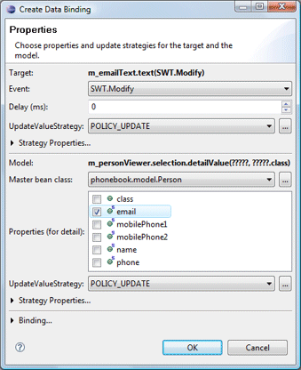
If the Strategy Properties section is expanded for either the Target or Model, validators (AfterConvert, AfterGet and BeforeSet) and converters can be specified.

If necessary, the resulting binding object can be assigned to a field. This can be useful when you need to bind to the validationStatus of the binding itself.

At the top of the page, existing Bound Properties are listed. The Target and Model are shown as well as the Target Strategy and the Model Strategy.
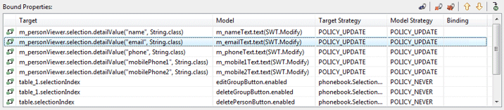
Clicking the
 Edit button or Edit menu opens the Edit Binding dialog
where the update strategies may be modified.
Edit button or Edit menu opens the Edit Binding dialog
where the update strategies may be modified.
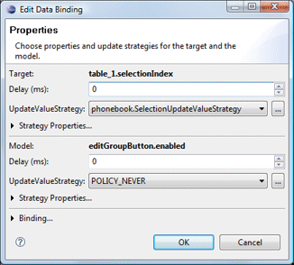 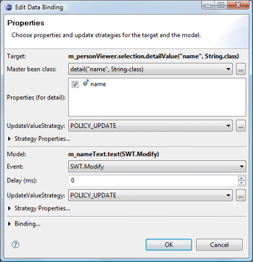
The
 Delete button or Delete menu is used to delete the selected
bound property while the
Delete button or Delete menu is used to delete the selected
bound property while the
 Delete All button or Delete All menu is used to delete all of
the bound properties.
Delete All button or Delete All menu is used to delete all of
the bound properties.
The
 Move Up and
Move Up and
 Move Down buttons and menus are used to change the order of the
bindings while the
Move Down buttons and menus are used to change the order of the
bindings while the
 Goto Definition button and menu are used to jump to the generated
code for the binding.
Goto Definition button and menu are used to jump to the generated
code for the binding.
As bindings are created or edited on the Bindings tab, the necessary data binding code is generated which may then be seen in the Source view. An initDataBindings() method is created, if it does not already exist and a call to that method is added to the end of the widget creation process.
Within the initDataBindings() method, any needed observables are created first followed by the creation of the Data Binding Context. Simple SWT data bindings are then created using the new context followed by any JFace content providers, list providers and inputs that are needed.

Warning: do not edit the initDataBinding() method by hand (without carefully matching the code generation pattern used by the tool) as it will be regenerated in its entirety any time the tool needs to add, remove or update a data binding.